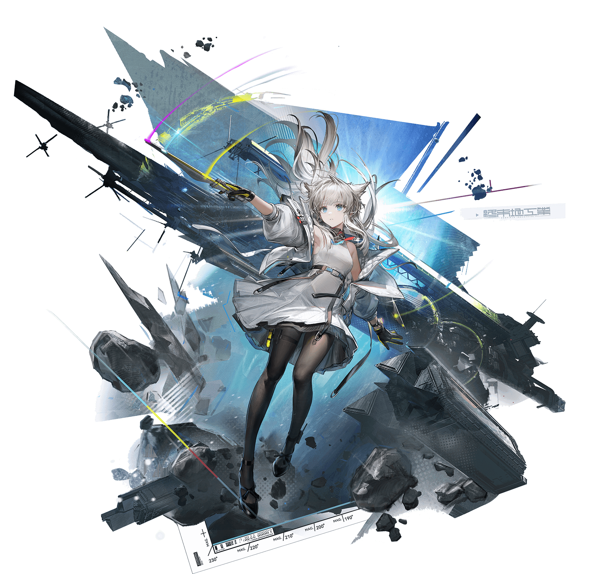

Why I love Perlica:
Meet Perlica, my favorite character and the one who inspired this corner of my world.
She represents a unique combination of beauty, confidence, and resilience. Her silver hair, futuristic outfit, and composed expression give her an almost otherworldly presence — like someone who belongs to a future where technology and humanity exist side by side.
Beyond her appearance, what makes her special to me is the feeling she brings: a quiet strength, a brilliant mind, and the determination to keep moving forward even when the world becomes uncertain.
Here is the source of my images